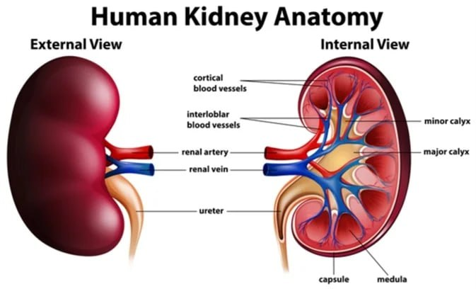

Protect Your Kidneys, Protect Your Future
Kidneys filter waste, balance bodily fluids, and regulate blood pressure every second of every day. Discover essential facts, learn early warning signs, and explore lifestyle habits that keep your kidneys healthy.
About Kidney Health
Understanding how kidneys function and debunking common misconceptions.

What Are Kidneys?
Two bean-shaped organs that filter waste and toxins from your blood, balance electrolytes, and produce essential hormones.
Read More
Health Statistics
Detailed prevalence data, demographic disparities, and risk factors including diabetes and hypertension.
View Stats
Myths & Facts
Separate common myths from medical truths regarding kidney disease, symptoms, pain, and treatments.
Explore MythsFeatured Highlights
Core information to empower you and your loved ones.
🛡️ Prevention Tips
- Stay well hydrated throughout the day
- Maintain balanced blood pressure and glucose
- Adopt a low-sodium, nutrient-rich diet
- Exercise regularly and avoid smoking
⚠️ Common Symptoms
- Swelling in feet, ankles, hands, or face
- Persistent fatigue or difficulty concentrating
- Changes in urination frequency or color
- Shortness of breath and trouble sleeping
💊 Treatment Options
- Protective blood pressure medications
- Specialized kidney-friendly renal nutrition
- Hemodialysis and peritoneal dialysis
- Kidney transplantation for advanced stages
About Our Mission
The Kidney Health Awareness Project is a community-focused educational platform committed to reducing the burden of kidney disease. By offering clear medical facts, promoting free screenings, and uniting communities through annual walks and workshops, we strive to foster a world where kidney disease is detected and treated early.
Contact Us
Have questions or want to participate in upcoming events? Send us a message.